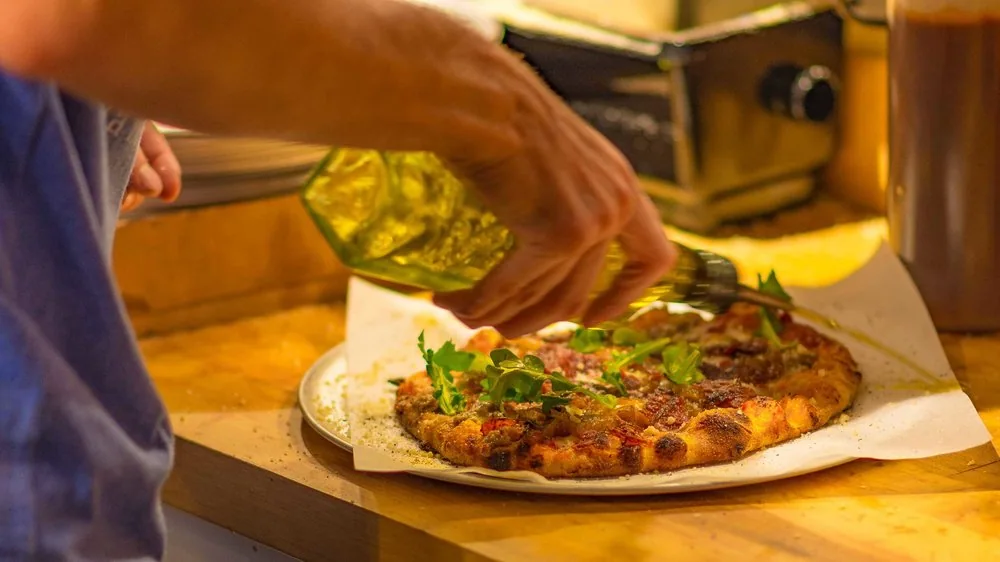
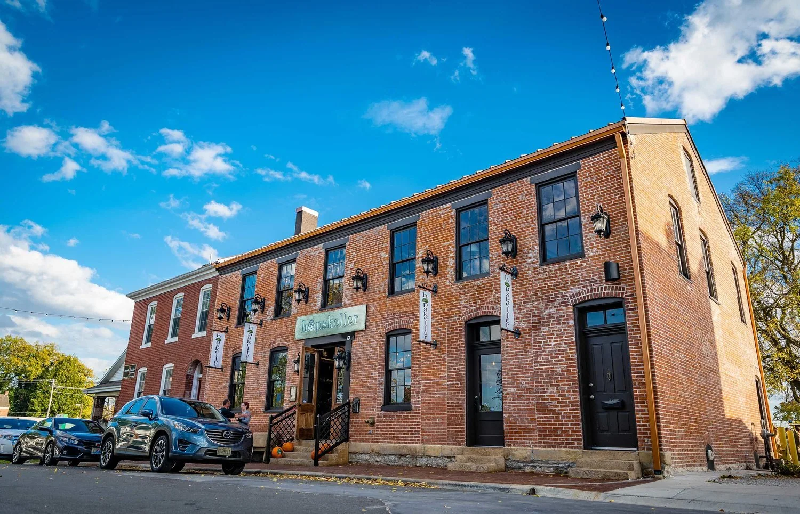
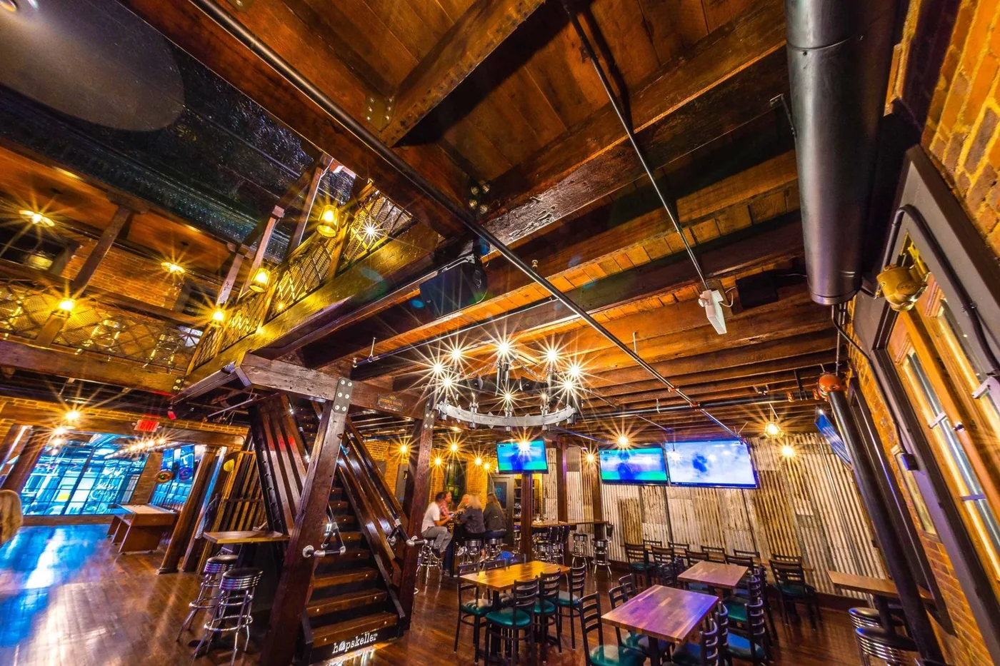
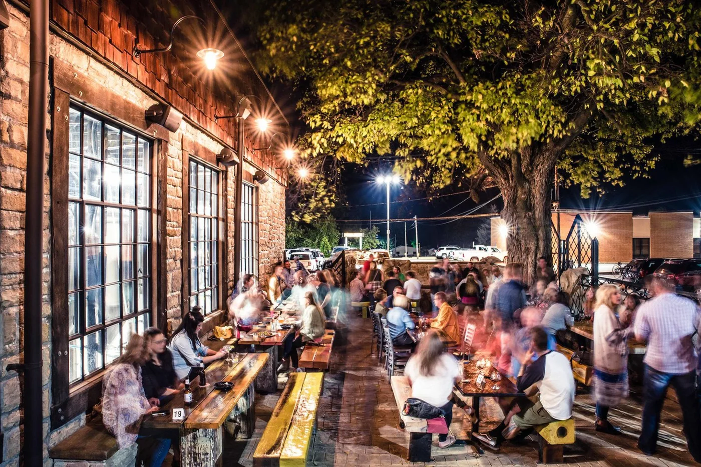

Wood-fired pizza
Handmade pizzas from our brick oven, plus shareables, salads, and brewpub favorites.
View the food menuDowntown Waterloo, Illinois
English-inspired ales, wood-fired pizza, and a seat for you in the heart of downtown Waterloo.


Handmade pizzas from our brick oven, plus shareables, salads, and brewpub favorites.
View the food menu
Start with a flight of house beers inspired by Northern England and the Pacific Northwest.
See what’s on tap Explore our beersAt the brewpub
Get updates on new beers, brewpub news, and upcoming events.
Join the mailing list
Our story
Matt Schweizer’s homebrews grew into a downtown gathering place in a house built in 1854. Inside, you’ll find old barn wood, Victorian doors, and ironwork from St. Louis’s McKinley Bridge.
A fire closed the brewery shortly after it opened. The community helped bring it back, and we’ve been pouring beer here ever since.
Read the Hopskeller story ↗Come see us
116 East 3rd Street
Waterloo, IL 62298

Get your group together at the brewpub, with room indoors and out on the patio.
Explore private rentalsRead Matt’s notes from the brewhouse and stories about the people who make it what it is.
Read the journal ↗